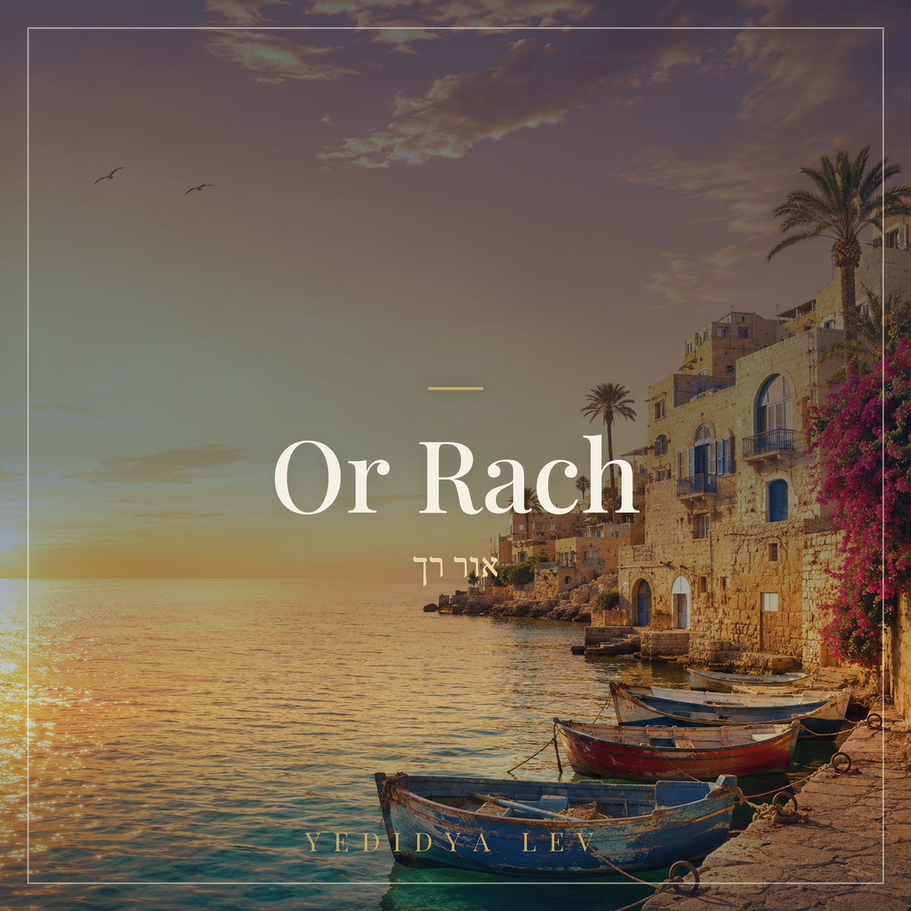

Yedidya Lev · Album
Sanftes Licht
Ein Abend am Meer, der bis zum Morgen dauert. Sechzehn ruhige hebräische Lieder und Instrumentalstücke über das Licht im jüdischen Leben: die Abendsonne, die Kerze, den Mond, den Tau und den ersten Strahl am Morgen.
Musik, die zur Ruhe bringt und dabei leise vom Glauben erzählt.
Der jüdische Tag beginnt am Abend. Or Rach folgt diesem Tag von der goldenen Stunde über Kerzenlicht und Mondlicht bis zum Morgengrauen über dem Wasser. Jeder Titel ist ein einziges hebräisches Wort aus dem gelebten Glauben: Kerze, Becher, Buch, Tau, Licht.
Die Lieder sagen wenig und lassen viel Raum. Ein Schlüssel auf dem Tisch nach Feierabend, ein Tropfen über dem Rand des Hawdala-Bechers, ein Bleistiftstrich in einem alten Buch. Wo die Worte aufhören, erzählen Oud, Ney, Kanun und Mandoline weiter.
Ein Album für den Balkon, für das Abendessen, für die Fahrt am Meer entlang und für die Stunden, in denen man einfach still werden möchte.
Or Rach („Sanftes Licht“) von Yedidya Lev
Klick auf ▶ und höre in jedes Lied hinein.
Die Sonne sinkt über dem Mittelmeer. Erst nur Wellen und eine Oud, dann antwortet eine Ney wie vom anderen Ufer, und langsam wächst ein weicher Puls herein. Hier beginnt der jüdische Tag.
Feierabend in einer Stadt aus Stein: Schlüssel auf dem Tisch, Schuhe an der Tür, das Herz kommt langsam nach Hause. Am Ende bleibt ein einziges Wort, und die Weisen sagen, es sei Gottes Name.
Eine Welle kommt, eine Welle geht, und der Sand bleibt. Feiner Sand hält das große Meer auf, weil Gott ihm die Grenze gesetzt hat. Und auch das unruhige Meer im eigenen Herzen darf still werden.
Ein weites Feld in der letzten Sonne. Mandoline und Bouzouki unterhalten sich wie zwei Menschen, die nach der Arbeit am Feldrand sitzen, und am Ende sprechen beide zugleich.
Eine warme Nacht in einer Gasse aus altem Stein, Jasminduft in der Luft. Den ganzen Tag gesucht, und Er stand hinter der Mauer und schaute durchs Fenster. „Mein Geliebter ist mein, und ich bin Sein.“
Eine einzige Kerze in einem dunklen Raum, wie in der Nacht der Chametz-Suche vor Pessach. Und wer durchsucht meine Zimmer? „Eine Leuchte Gottes ist die Seele des Menschen.“
Wind und Geist im selben Wort. Erst schwebt alles, ein Bogen, der atmet. Dann kommt der Wind auf der Erde an, und dieselbe Melodie geht mit festen Schritten.
Hawdala am Samstagabend: Der Becher läuft über als Zeichen des Segens, der Duft der Gewürze bleibt an den Händen. „Den Becher der Rettung erhebe ich.“
Ein Lied ohne Worte, dreimal im Kerzenlicht gedreht, mal warm, mal dunkel, mal hell. Wie ein Gebet, das man jeden Abend gleich spricht und das jeden Abend anders klingt.
Ein altes Buch im Kerzenlicht, darin ein Bleistiftstrich von jemandem, der seinen Namen nicht dazugeschrieben hat. Im Hebräischen heißen lesen und rufen gleich: Ich lese im Buch, und das Buch ruft mich.
Der Mond hat kein eigenes Licht und erleuchtet doch die ganze Nacht. Israel zählt seine Zeiten nach diesem kleinen Licht. Und auch ich leuchte nur, weil ich von Deinem Licht empfange.
Die Tiefe in der Nacht, im Meer und im Menschen, dort, wo kein Licht mehr hinreicht. Welle um Welle ist über mich gegangen, und gerade am tiefsten Ort antwortest Du.
Halb im Schlaf tauchen Bilder auf und versinken wieder: eine Tür ohne Wand, Regen, der zum Himmel steigt. Und über allem die Gewissheit: Ich schlafe, und Du bist wach.
Die Stille nach dem Traum. Ein Vibraphon spielt einzelne Töne, zwischen denen viel Raum bleibt. Hier gehören die Pausen zur Musik.
Der Tau kommt in der Nacht, ohne Laut, und jeder Tropfen liegt genau an seinem Ort. Selbst im trockensten Jahr bleibt er nicht aus. „Ich werde für Israel sein wie der Tau.“
Der Morgen über dem Meer, ein dünner Strich Licht auf dem Wasser. Die Nacht ist nicht geflohen, sie hat sich geöffnet. „In Deinem Licht sehen wir das Licht.“
Sofort nach dem Kauf im Freundesbereich von Schalom Israel: alle sechzehn Lieder zum Anhören und als MP3 mit Cover, das ganze Album als ZIP und darin das Liedheft mit allen Texten auf Hebräisch, in Umschrift und in deutscher Übersetzung (PDF). Bezahlung über Digistore24.
€ 14,90
Jetzt kaufenoder
Werde Freund dieses ProjektsWer im Januar und Februar Freund von Schalom Israel wird, bekommt Or Rach als Geschenk dazu, im Freundesbereich zum Hören und Herunterladen.